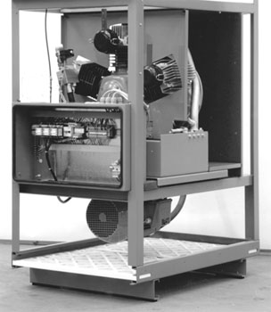
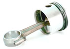
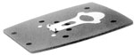
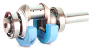
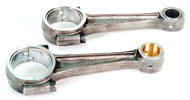

КОМПРЕССОРЫ BOGE: Поршневые компрессоры серии TopAir (SC) в шумопоглощающем кожухе
скачать
брошюру>>
Производительность: 0,71-2,6 м3/мин
Давление: 10, 15 атм
Мощность: 4,0-15 кВт
Масса: 341-473 кг
Компрессоры серии TopAir SС являются двухступенчатыми поршневыми маслосмазываемыми компрессорами, с клиноременным приводом, воздушным охлаждением, с максимальным давлением сжатия 10 или 15 атм (изб), с электронным управлением, смонтированными в шумопоглощающем кожухе.
Особенности и преимущества компрессора SC:
Воздух попадает в компрессор через установленный в нижнейчасти корпуса панельный фильтр, обеспечивающие предварительную очистку от пыли. Поступающий на сжатие воздухкомпрессор проходит последующую очистку в высококачественном фильтре всасывания со степенью очистки 3 мкм, установленном в шумопоглощающем корпусе. Канал всасывания термически изолирован от цилиндра, и к комбинированному клапану подается холодный воздух.
Тщательно отполированные рабочие поверхности цилиндров и поршней с допуском ±6 мкм обеспечивают высокую производительность, надежность в работе и низкое остаточное содержание масла. Низкая скорость движения поршней и вращения коленчатого вала обеспечивает длительный срок службы поршневых колец
BOGE.
Комбинированные язычковые клапаны всасывания/нагнетанияferax® с увеличенным сроком службы. Оптимизированные диаметры сечения способствуют низкому сопротивлению потоку поршня воздуха компрессора .
Коленчатый вал, выкованный из единой заготовки, сдинамической балансировкой, с большим запасом прочности, с роликовыми подшипниками с двух сторон.
Шатуны с большим запасом прочности. Шатун второй ступени снабжен сверхпрочным игольчатым подшипником на стороне коленвала.

Сжатый воздух, вырабатываемый компрессорами SC, подвергается двухступенчатому охлаждению. Высокоэффективные промежуточный и концевой теплообменникикомпрессора снижают разницу температур между температурой всасываемого и получаемого сжатого воздуха до уровня, не уступающего теплообменникам винтовых компрессоров - не более 10 оС.
Для управления компрессором используется электронная система управления Fosuc - та же, котораяиспользуется и во многих винтовых компрессорах BOGE.
В компрессорах серии SC нет реле давления (прессостатов), значение сетевого давления измеряется электронным датчиком и отображается на жидкокристаллическом дисплее,а пуск и остановка электродвигателя производятся по сигналам микропроцессорной системы управления. Изменение настроек и просмотр данных о работе компрессора производится с помощью клавиатурного ввода. 
Исключительно низкий для поршневых компрессоров уровень шума.
Комплектация компрессора
Компрессорные установки серии TopAir SC укомплектованы всеми необходимыми устройствами и поставляются полностью готовыми к работе. Для начала работы необходимо только подвести к компрессору электропитание и подключить его к сети сжатого воздуха.
Комплектация компрессоров SC включает в себя следующие устройства:
- поршневой блок сжатия
- приводной электродвигатель
- крыльчатка вентилятора охлаждения
- шумопоглощающий кожух
- электрошкаф с полностью выполненной электропроводкой
- контактор прямого запуска (до 4 кВт) или контактор «звезда-треугольник» (начиная с 5,5 кВт)
- трасформатор регулировочного электропитания
- электронный датчик сетевого давления
- микропроцессорную систему управления RATIO, полностью настроенную
- кнопку аварийного отключения
- защитный выключатель электродвигателя
- разгрузочный клапан первой ступени с соленоидным клапаном управления
- разгрузочный клапан второй ступени с пневматическим управлением
- обратный клапан
- предохранительный клапан первой ступени
- предохранительный клапан второй ступени
- теплообменник первой ступени (промежуточный)
- теплообменник второй ступени (концевой охладитель)
- циклонный сепаратор с автоматическим конденсатоотводчиком
- воздушные картриджные фильтры всасывания
- панельный фильтр всасывания
- комплектная приводная система (шкивы, ремни, станины, система настройки, защитный кожух)
Технические данные компрессоров серии SC
Максимальное рабочее давление - 10 и 15 атм (изб).
|
модель компрессора
|
max. давление
|
производит.
|
мощность
|
габариты
|
|
масса
|
серия SC |
атм
|
м 3/мин
|
кВт
|
мм |
кг |
|
SC 6 |
10
|
0,710
|
4,0 |
830/ 1120/ 1570 |
G 1 |
341 |
|---|---|---|---|---|---|---|
SC 8 |
10
|
0,970
|
5,5 |
830/ 1120/ 1570 |
G 1 |
363 |
SC 10 |
10
|
1,330
|
7,5 |
830/ 1120/ 1570 |
G 1 |
389 |
SC 15 |
10
|
2,030
|
11,0 |
830/ 1120/ 1570 |
G 1 |
453 |
SC 20 |
10
|
2,600
|
15,0 |
830/ 1120/ 1570 |
G 1 |
463 |
SC 3 |
15
|
0,320
|
2,2 |
830/ 1120/ 1570 |
DN 12 |
337 |
SC 4 |
15
|
0,450
|
3,0 |
830/ 1120/ 1570 |
G 1 |
343 |
SC 6 |
15
|
0,610
|
4,0 |
830/ 1120/ 1570 |
G 1 |
368 |
SC 8 |
15
|
0,800
|
5,5 |
830/ 1120/ 1570 |
G 1 |
390 |
SC 10 |
15
|
1,100
|
7,5 |
830/ 1120/ 1570 |
G 1 |
397 |
SC 15 |
15
|
1,640
|
11,0 |
830/ 1120/ 1570 |
G 1 |
463 |
SC 20 |
15
|
2,030
|
15,0 |
830/ 1120/ 1570 |
G 1 |
473 |